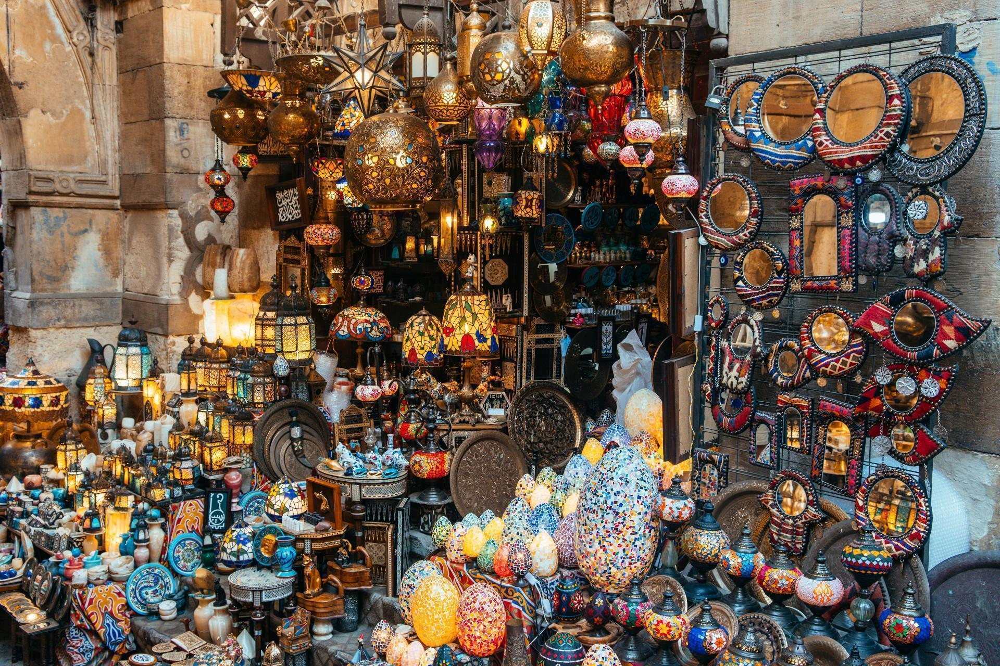
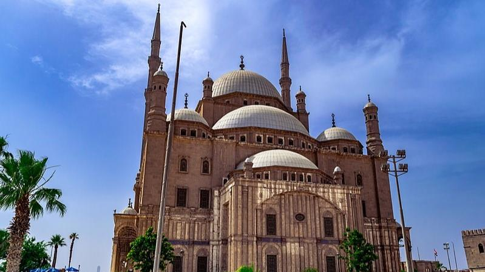
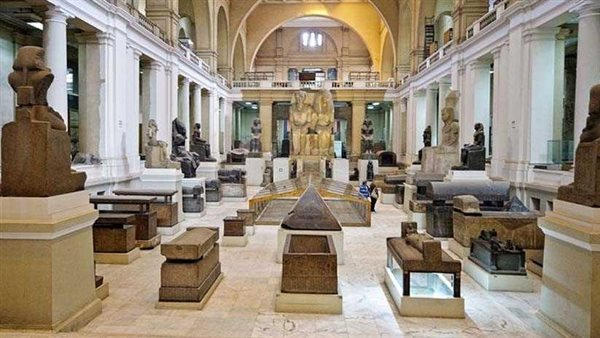
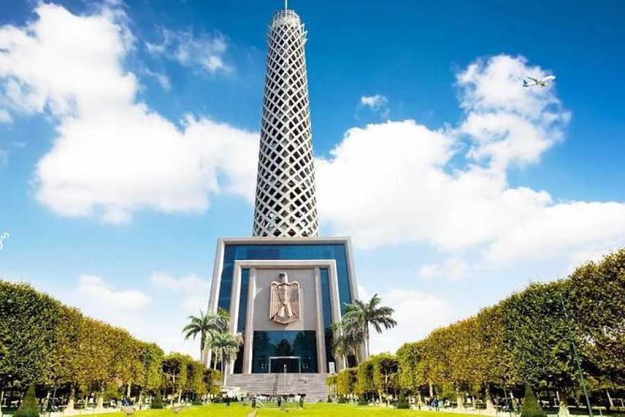

The Great Pyramids of Giza
One of the Seven Wonders of the Ancient World. These massive structures and the Great Sphinx represent the peak of Old Kingdom engineering and Egyptian history.
View on Google Maps
Khan el-Khalili
A historic souq in the center of Islamic Cairo. This famous bazaar is filled with traditional crafts, spices, jewelry, and the legendary Al-Fishawy coffee house.
View on Google Maps
The Citadel of Saladin
A medieval Islamic fortification that offers the best panoramic view of Cairo. It is also home to the stunning Mosque of Muhammad Ali (the Alabaster Mosque).
View on Google Maps
The Egyptian Museum
Located in Tahrir Square, this iconic red building houses the world's largest collection of Pharaonic antiquities, including the treasures of King Tutankhamun.
View on Google Maps
Al-Azhar Park
Listed as one of the world's sixty great public spaces. It offers lush green gardens and a spectacular view of the Citadel and Old Cairo's historic minarets.
View on Google Maps
Cairo Tower
Standing at 187 meters on Gezira Island, the tower's lattice design resembles a lotus plant. It provides the highest 360-degree observation deck in the city.
View on Google Maps